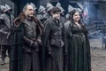

| EP | Imagem | Titulo | Prévia |
|---|---|---|---|
| 41 | "The Wars to Come" | Cersei e Jamie tentam sem Tywin. Varys revela a Tyrion que uma conspiração está em curso. Dany enfrenta uma nova ameaça. | |
| 42 | "The House of Black and White" | Arya chega a Braavos, enquanto Pod e Brienne encontram dificuldades no caminho. Cersei teme pela segurança de sua filha em Dorne. | |
| 43 |  | "High Sparrow" | Arya tem uma visão em Braavos, e Cersei faz justiça. Já Margaery aproveita o seu novo marido. |
| 44 | "Sons of the Harpy" | A Fé Militante cresce, ao passo que Jaime e Bronn seguem para o Sul. Ellaria e as quatro serpentes querem vingança. | |
| 45 | "Kill the Boy" | Em Meereen, Dany toma uma difícil decisão. Jon consegue uma inesperada ajuda, enquanto Brienne procura por Sansa. | |
| 46 | "Unbowed, Unbent, Unbroken" | Arya segue seu treinamento com o Homem Sem Rosto, enquanto Jorah e Tyrion encontram donos de escravos. | |
| 47 | "The Gift" | Jon está preparado para o conflito, e Sansa tenta falar com Theon. Enquanto Brienne espera por um sinal, Stannis não muda. | |
| 48 | "Hardhome" | Arya mostra progressos no treinamento, e Sansa confronta um velho conhecido. Cersei encontra dificuldades, ao passo que Jon parte em viagem. | |
| 49 | "The Dance of Dragons" | Stannis está diante de uma importante e difícil decisão. Dany, por sua vez, assiste à uma celebração. | |
| 50 | "Mother's Mercy" | No último episódio da temporada, Dany está cercada por estranhos. Enquanto Stannis segue em frente, Cersei busca o perdão. Jon é desafiado. |